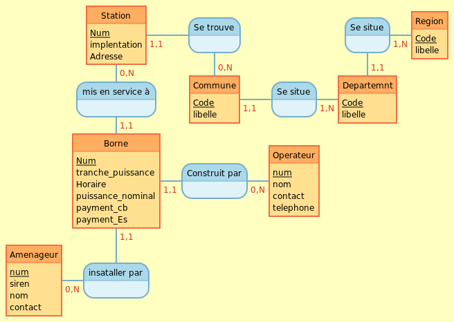
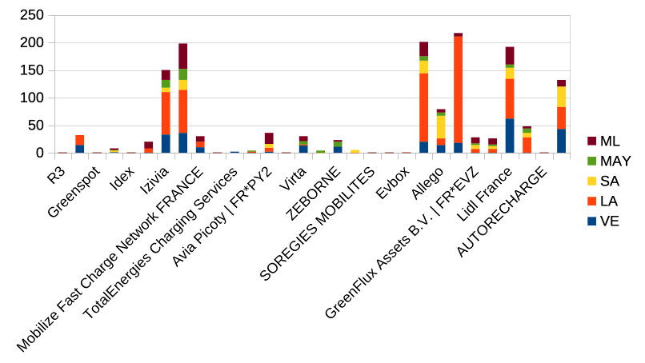
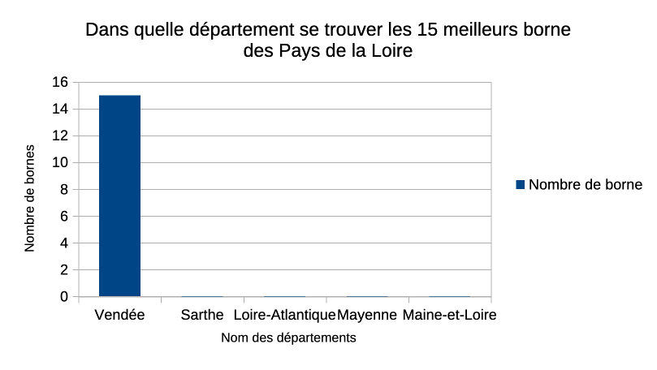
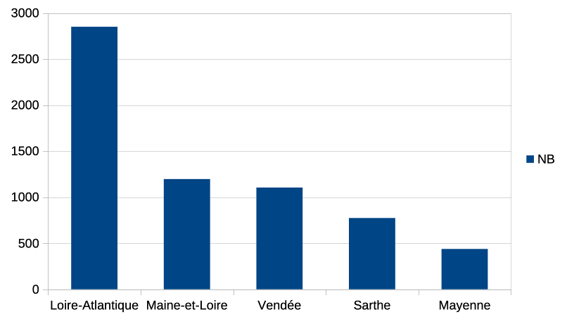
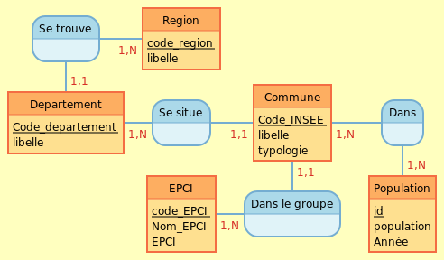

Présentation du groupe de projet
Nettoyage des valeurs NULL et correction des codes INSEE erronés.
-- Droits de Kelian (s2a05a)
GRANT SELECT,
UPDATE (
TELEPHONE_OPERATEUR,
NOM_ENSEIGNE,
NOM_STATION,
IMPLANTATION_STATION
)
ON bornes_de_recharge TO s2a05a;
-- Droits de Julien (s2a06b)
GRANT SELECT,
UPDATE (
ADRESSE_STATION,
CODE_INSEE_COMMUNE,
NOMBRE_POINTS_DE_CHARGE,
PUISSANCE_NOMINALE
)
ON bornes_de_recharge TO s2a06b;
-- Droits de Mathys (s2a03b)
GRANT SELECT,
UPDATE (
PAIEMENT_ACTE,
PAIEMENT_CB,
PAIEMENT_AUTRE,
HORAIRES
)
ON bornes_de_recharge TO s2a03b;
-- Droits de Lyam (s2a14b)
GRANT SELECT,
UPDATE (
DATE_MISE_EN_SERVICE,
DATE_DE_MISE_À_JOUR,
LIBELLE_REGION,
CODE_REGION,
LIBELLE_DEPARTEMENT,
LIBELLE_COMMUNE,
TRANCHE_PUISSANCE,
NOM_OPERATEUR
)
ON bornes_de_recharge TO s2a14b;
--julien : s2a06b
--adresse_station, code_insee_commune, nombre_points_de_charge, puissance_nominale
update s2a04a.bornes_de_recharge b
set b.code_insee_commune =
(select co.code_insee
from basetd.commune co
where co.nom_commune = b.libelle_commune and b.LIBELLE_DEPARTEMENT = co.nomdep)
where b.code_insee_commune is null
and exists
(select 1 from basetd.commune co
where co.nom_commune = b.libelle_commune);
commit;
UPDATE s2a04a.bornes_de_recharge b
SET b.code_insee_commune = '85207'
WHERE b.libelle_commune = 'Saint-Denis-du-Payré' AND b.code_insee_commune IS NULL;
UPDATE s2a04a.bornes_de_recharge b
SET b.code_insee_commune = '85001'
WHERE b.libelle_commune like '%Aiguillon-la-Presqu%' AND b.code_insee_commune IS NULL;
UPDATE s2a04a.bornes_de_recharge b
SET b.code_insee_commune = '72052'
WHERE UPPER(b.libelle_commune) LIKE '%CHAHAIGNES%' AND b.code_insee_commune IS NULL;
UPDATE s2a04a.bornes_de_recharge b
set b.code_insee_commune = '85083'
WHERE b.libelle_commune like '%Épine' AND b.code_insee_commune IS NULL;
UPDATE s2a04a.bornes_de_recharge b
set b.code_insee_commune = '72006'
WHERE b.libelle_commune = 'Arçonnay' AND b.code_insee_commune IS NULL;
UPDATE s2a04a.bornes_de_recharge b
SET b.code_insee_commune = '37098'
WHERE b.libelle_commune like 'Saint-Germain-d%' AND b.code_insee_commune IS NULL;
UPDATE s2a04a.bornes_de_recharge b
SET b.code_insee_commune = '72173'
WHERE UPPER(b.libelle_commune) LIKE '%LUCEAU%' AND b.code_insee_commune IS NULL;
commit;
--Lyam : s2a14b
--colonne de DATE_MISE_EN_SERVICE
select * from s2a04a.bornes_de_recharge where DATE_MISE_EN_SERVICE is null ;
--DATE_MISE_EN_SERVICE active a la date d'aujourd'hui
Update s2a04a.bornes_de_recharge
SET DATE_MISE_EN_SERVICE = '2026-03-20'
where DATE_MISE_EN_SERVICE is null;
commit;
-- colonne DATE_DE_Mise_à_jour
select * from s2a04a.bornes_de_recharge where DATE_DE_Mise_à_jour is null ;
-- aucun null
-- colonne LIBELLE_REGION
select * from s2a04a.bornes_de_recharge where LIBELLE_REGION is null ;
-- aucun null
-- colonne CODE_REGION
select * from s2a04a.bornes_de_recharge where CODE_REGION is null ;
-- aucun null
-- colonne LIBELLE_DEPARTEMENT
select * from s2a04a.bornes_de_recharge where LIBELLE_DEPARTEMENT is null ;
-- aucun null
-- colonne LIBELLE_COMMUNE
select * from s2a04a.bornes_de_recharge where LIBELLE_COMMUNE is null ;
-- aucun null
-- colonne TRANCHE_PUISSANCE
select * from s2a04a.bornes_de_recharge where TRANCHE_PUISSANCE is null ;
-- aucun null
-- colonne NOM_OPERATEUR
select * from s2a04a.bornes_de_recharge where NOM_OPERATEUR is null ;
Update s2a04a.bornes_de_recharge
SET NOM_OPERATEUR = 'Jeffrénergie'
where NOM_OPERATEUR is null;
commit;
--Mathys : s2a03b
--aucun null
select * from s2a04a.bornes_de_recharge where paiement_autre is null;
select * from s2a04a.bornes_de_recharge where paiement_cb is null;
update s2a04a.bornes_de_recharge set paiement_cb='false'
where paiement_cb is null;
commit;
update s2a04a.bornes_de_recharge set paiement_autre='true'
where paiement_autre is null;
commit;
select * from s2a04a.bornes_de_recharge where horaires is null;
--aucun null
--kelian : s2a05a
SELECT
distinct contact_operateur
FROM
s2a04a.bornes_de_recharge
WHERE
telephone_operateur IS NULL;
SELECT
contact_operateur,
telephone_operateur,
nom_enseigne,
nom_station
FROM
s2a04a.bornes_de_recharge;
SELECT
distinct telephone_operateur
FROM
s2a04a.bornes_de_recharge
WHERE
contact_operateur = 'MAIL_OPERATEUR'
AND telephone_operateur IS NOT NULL;
UPDATE s2a04a.bornes_de_recharge
SET
telephone_operateur = 'INVENTÉ OU REPRIT'
WHERE
contact_operateur = 'MAIL_OPERATEUR';
COMMIT;
--Mathys : s2a03b
--aucun null
select * from s2a04a.bornes_de_recharge where paiement_autre is null;
select * from s2a04a.bornes_de_recharge where paiement_cb is null;
update s2a04a.bornes_de_recharge set paiement_cb='false'
where paiement_cb is null;
commit;
update s2a04a.bornes_de_recharge set paiement_autre='true'
where paiement_autre is null;
commit;
select * from s2a04a.bornes_de_recharge where horaires is null;
--aucun null
Séparation des données en plusieurs tables pour. chaque etudiant

--Lyam : Table Region, Departement, Commune
-- TABLE REGION --
grant select on region to s2a04a;
drop table if exists region;
create table region (
code number(5) primary key,
libelle varchar2(128)
);
insert into region ( code, libelle )
select d istinct code_region, libelle_region from s2a04a.bornes_de_recharge;
-- TABLE DEPARTEMENT --
grant select on departement to s2a04a;
drop table if exists departement;
create table departement (
code number(5) generated always as identity primary key,
libelle varchar2(128),
region_code references region ( code )
);
insert into departement ( libelle, region_code )
select distinct libelle_departement, code_region from s2a04a.bornes_de_recharge;
-- TABLE COMMUNE --
grant select on commune to s2a04a;
drop table if exists commune;
create table commune (
code_insee number(5) primary key,
libelle varchar2(128),
departement_code references departement ( code )
);
insert into commune ( code_insee, libelle, departement_code )
select distinct code_insee_commune, libelle_commune, d.code from s2a04a.bornes_de_recharge b join departement d on b.libelle_departement = d.libelle;
grant select on Commune to s2a05a;
grant select on Commune to s2a03b;
grant select on Commune to s2a06b;
grant select on Commune to s2a04a;
grant select on Departement to s2a05a;
grant select on Departement to s2a03b;
grant select on Departement to s2a06b;
grant select on Departement to s2a04a;
grant select on Region to s2a05a;
grant select on Region to s2a03b;
grant select on Region to s2a06b;
grant select on Region to s2a04a;
--kelian : Table Station
create table station
(
num_station number generated always as identity primary key,
nom_station varchar2(128),
implantation_station varchar2(128),
adresse_station varchar2(128),
code_insee_commune varchar2(26)
);
insert into station (nom_station, implantation_station, adresse_station,code_insee_commune)
select distinct
s.nom_station,
s.implantation_station,
s.adresse_station,
s.code_insee_commune
from s2a04a.bornes_de_recharge s;
-- Optimisation possible en fesant des role
grant select on Station to s2a05a;
grant select on Station to s2a03b;
grant select on Station to s2a06b;
grant select on Station to s2a04a;
--julien : Table Operateur
create table operateurs
(
num_operateur number generated always as identity primary key,
nom_operateur varchar2(128),
contact_operateur varchar2(128),
telephone_operateur varchar2(26)
);
drop table operateurs;
insert into operateurs (nom_operateur, contact_operateur, telephone_operateur)
select distinct
b.nom_operateur,
b.contact_operateur,
b.telephone_operateur
from s2a04a.bornes_de_recharge b;
select * from operateurs;
grant select on operateurs to s2a04a;
grant select on operateurs to s2a14b;
grant select on operateurs to s2a03b;
grant select on operateurs to s2a05a;
-- Mathys : Table Amenageur
create table Amenageur(
nom_amenageur VARCHAR(128),
siren NUMBER (38),
contact_amenageur VARCHAR(128)
);
drop table Amenageur;
insert into Amenageur(
nom_amenageur,
siren,
contact_amenageur)
select distinct nom_amenageur, siren_amenageur, contact_amenageur
from s2a04a.bornes_de_recharge;
grant select on Amenageur to s2a12b;
--Adrien : Table Borne de recharge
create table bornes_de_recharge as (
select * from s2a01b.borne_de_recharge
);
grant select on bornes_de_recharge2 to s2a07a;
grant select on borne to s2a09a;
drop table borne;
drop table borne_la;
drop table bornes_de_recharge;
drop table commune_la;
--- modifier bornes_de_recharge ===================
ALTER Table bornes_de_recharge ADD num_station Number(5);
ALTER Table bornes_de_recharge ADD num_operateur Number(5);
ALTER Table bornes_de_recharge ADD num_amenageur Number(5);
UPDATE bornes_de_recharge b
SET b.num_amenageur = (
SELECT a.num_amenageur
FROM s2a03b.amenageur a
WHERE a.siren= b.siren_amenageur
AND a.nom_amenageur = b.nom_amenageur
and a.CONTACT_AMENAGEUR = b.CONTACT_AMENAGEUR
AND ROWNUM = 1
)
WHERE EXISTS (
SELECT 1
FROM s2a03b.amenageur a
WHERE a.siren= b.siren_amenageur
AND a.nom_amenageur = b.nom_amenageur
and a.CONTACT_AMENAGEUR = b.CONTACT_AMENAGEUR
);
commit;
UPDATE bornes_de_recharge b
SET b.num_station = (
SELECT n.num_station
FROM s2a14b.station n
WHERE n.nom_station = b.nom_station
AND n.implantation_station = b.implantation_station
AND n.code_insee_commune = b.code_insee_commune
AND ROWNUM = 1
)
WHERE EXISTS (
SELECT 1
FROM s2a14b.station n
WHERE n.nom_station = b.nom_station
AND n.implantation_station = b.implantation_station
AND n.code_insee_commune = b.code_insee_commune
);
commit;
UPDATE bornes_de_recharge b
SET b.num_operateur = (
SELECT n.num_operateur
FROM s2a06b.operateurs n
WHERE n.nom_operateur = b.nom_operateur
AND n.contact_operateur = b.contact_operateur
AND n.telephone_operateur = b.telephone_operateur
AND ROWNUM = 1
)
WHERE EXISTS (
SELECT 1
FROM s2a06b.operateurs n
WHERE n.nom_operateur = b.nom_operateur
AND n.contact_operateur = b.contact_operateur
AND n.telephone_operateur = b.telephone_operateur
);
commit;
--============
--=== Drop des collones pas nécésaire =======================
ALTER TABLE bornes_de_recharge DROP COLUMN siren_AMENAGEUR;
ALTER TABLE bornes_de_recharge DROP COLUMN nom_AMENAGEUR;
ALTER TABLE bornes_de_recharge DROP COLUMN CONTACT_AMENAGEUR;
ALTER TABLE bornes_de_recharge DROP COLUMN CONTACT_OPERATEUR;
ALTER TABLE bornes_de_recharge DROP COLUMN TELEPHONE_OPERATEUR;
ALTER TABLE bornes_de_recharge DROP COLUMN NOM_ENSEIGNE;
ALTER TABLE bornes_de_recharge DROP COLUMN IMPLANTATION_STATION;
ALTER TABLE bornes_de_recharge DROP COLUMN ADRESSE_STATION;
ALTER TABLE bornes_de_recharge DROP COLUMN CODE_INSEE_COMMUNE;
ALTER TABLE bornes_de_recharge DROP COLUMN NOMBRE_POINTS_DE_CHARGE;
ALTER TABLE bornes_de_recharge DROP COLUMN LIBELLE_REGION;
ALTER TABLE bornes_de_recharge DROP COLUMN CODE_REGION;
ALTER TABLE bornes_de_recharge DROP COLUMN LIBELLE_DEPARTEMENT;
ALTER TABLE bornes_de_recharge DROP COLUMN LIBELLE_COMMUNE;
ALTER TABLE bornes_de_recharge DROP COLUMN NOM_OPERATEUR;
ALTER TABLE bornes_de_recharge DROP COLUMN NOM_STATION;
-- ==========================================
--=== crée la table borne
CREATE table Borne (
id NUMBER GENERATED ALWAYS AS IDENTITY (start with 1 increment by 1) primary key,
amenageur Number(38),
operateur Number(38),
station Number(38),
tranche_puissance VARCHAR2(26),
horaires VARCHAR2(256),
paiement_acte VARCHAR2(26),
paiement_cb VARCHAR2(26),
paiement_autre VARCHAR2(26),
date_de_mise_a_jour DATE,
date_mise_en_service VARCHAR2(26),
PUISSANCE_NOMINALE Number(38)
);
-- ====== insertion des colonnes
INSERT INTO Borne (
amenageur,
operateur,
station,
tranche_puissance,
horaires,
paiement_acte,
paiement_cb,
paiement_autre,
date_de_mise_a_jour,
date_mise_en_service,
PUISSANCE_NOMINALE
)
SELECT
num_AMENAGEUR,
NUM_OPERATEUR,
NUM_STATION,
TRANCHE_PUISSANCE,
HORAIRES,
PAIEMENT_ACTE,
PAIEMENT_CB,
PAIEMENT_AUTRE,
DATE_DE_MISE_À_JOUR,
DATE_MISE_EN_SERVICE,
PUISSANCE_NOMINALE
FROM bornes_de_recharge;
grant select on Borne to s2a05a;
grant select on Borne to s2a14b;
grant select on Borne to s2a06b;
grant select on Borne to s2a03b;
Séparation des données en plusieurs tables pour chaque département
-- Adrien : Table Loire-Atlantique
create table commune_LA
as
(select c.* from s2a14b.commune c
join s2a14b.departement d
on c.departement_code = d.code
where d.libelle = 'Loire-Atlantique');
CREATE table station_La as
(select * from s2a14b.station s
where s.code_insee_commune in
(select code_insee from commune_la));
create table borne_LA as select * from borne where station in (select num_station from station_LA);
-- Julien : Table Maine-et-Loire
create table communeML as select c.code_insee, c.libelle, c.departement_code from s2a14b.commune c, s2a14b.departement d where c.departement_code=d.code and d.libelle = 'Maine-et-Loire';
create table stationML as select * from s2a14b.station where code_insee_commune in (select code_insee from communeML);
create table borneML as select * from s2a04a.borne where station in (select num_station from stationML);
-- Kelian : Table sarthe
CREATE TABLE commune_sa
AS
SELECT
c.*
FROM
s2a14b.commune c
JOIN s2a14b.departement d ON c.departement_code = d.code
WHERE
d.libelle = 'Sarthe';
CREATE TABLE station_sa AS
SELECT
* FROM
s2a14b.station s
WHERE
s.code_insee_commune IN (SELECT code_insee_commune FROM commune_sa);
CREATE TABLE borne_sa AS
SELECT
* FROM
s2a04a.borne b
WHERE
b.station IN (SELECT num_station FROM station_sa);
-- Mathys : Table Mayenne
create table communeMAY as
select c.code_insee, c.libelle, c.departement_code from s2a14b.commune c, s2a14b.departement d
where c.departement_code = d.code and d.libelle = 'Mayenne';
select * from communeMAY;
create table stationMAY as
select * from s2a14b.station s
where code_insee_commune in (select code_insee from communeMAY);
select * from stationMAY;
create table borneMAY as
select * from s2a04a.borne b
where station in (select num_station from stationMAY);
-- Lyam : Table Vendée
CREATE TABLE communeVe (
code_insee_commune NUMBER(5) CONSTRAINT cle_inse_vendee PRIMARY KEY,
libelle_commune VARCHAR2(128),
departement_code number(2)
);
insert into communeVe (code_insee_commune,libelle_commune,departement_code)
SELECT c.code_insee,c.libelle,c.departement_code
FROM commune c,Departement d
where c.departement_code = d.code and d.libelle = 'Vendée';
CREATE TABLE stationVe as select * From station where code_insee_commune in (select code_insee_commune from communeVe);
CREATE TABLE borneVe as select * From s2a04a.borne where station in (select num_station from stationVe);
Analyses statistiques et répartition des données par département.
-- Lyam : Question 1 : Affichez pour chaque opérateur le nombre de prises(points de charge) par département.
SELECT
o.nom_operateur,
(SELECT COUNT(*) FROM borneve b WHERE b.operateur = o.num_operateur) AS VE,
(SELECT COUNT(*) FROM s2a04a.borne_La b WHERE b.operateur = o.num_operateur) AS LA,
(SELECT COUNT(*) FROM s2a05a.borne_SA b WHERE b.operateur = o.num_operateur) AS SA,
(SELECT COUNT(*) FROM s2a03b.bornemay b WHERE b.operateur = o.num_operateur) AS MAY,
(SELECT COUNT(*) FROM s2a06b.borneml b WHERE b.operateur = o.num_operateur) AS ML
FROM
s2a06b.operateurs o;
-- Adrien : Question 3: Affichez pour chaque département la répartition des prises. C’est à dire en fonction des valeurs de la puissance nominale(22, 50, 43, 60, 120,….). Dans ce cas vous prenez les 15 meilleurs prises qui sont installées.
SELECT b.PUISSANCE_NOMINALE, d.libelle
FROM s2a14b.departement d
JOIN (
SELECT code_insee, departement_code FROM s2a05a.commune_sa
UNION ALL
SELECT code_insee_commune, departement_code FROM s2a14b.communeve
UNION ALL
SELECT code_insee, departement_code FROM s2a06b.communeml
UNION ALL
SELECT code_insee, departement_code FROM s2a03b.communeMAY
UNION ALL
SELECT code_insee, departement_code FROM commune_la
) c
ON c.departement_code = d.code
JOIN (
SELECT code_insee_commune, num_station FROM s2a05a.station_sa
UNION ALL
SELECT code_insee_commune, num_station FROM s2a14b.stationve
UNION ALL
SELECT code_insee_commune, num_station FROM s2a06b.stationml
UNION ALL
SELECT code_insee_commune, num_station FROM s2a03b.stationMAY
UNION ALL
SELECT code_insee_commune, num_station FROM station_la
) s
ON s.code_insee_commune = c.code_insee
JOIN (
SELECT PUISSANCE_NOMINALE, station FROM s2a05a.borne_sa
UNION ALL
SELECT PUISSANCE_NOMINALE, station FROM s2a14b.borneve
UNION ALL
SELECT PUISSANCE_NOMINALE, station FROM s2a06b.borneml
UNION ALL
SELECT PUISSANCE_NOMINALE, station FROM s2a03b.borneMAY
UNION ALL
SELECT PUISSANCE_NOMINALE, station FROM borne_la
) b
ON b.station = s.num_station
order by PUISSANCE_NOMINALE desc
FETCH FIRST 15 ROWS ONLY;
-- Mathys : Question 10 : le nombre d'amenageur different par departement
SELECT distinct d.libelle, count(distinct a.nom_amenageur) as nb_amenageur_dep
FROM s2a14b.departement d
JOIN (
SELECT code_insee, departement_code FROM s2a05a.commune_sa
UNION ALL
SELECT code_insee_commune, departement_code FROM s2a14b.communeve
UNION ALL
SELECT code_insee, departement_code FROM s2a06b.communeml
UNION ALL
SELECT code_insee, departement_code FROM communeMAY
UNION ALL
SELECT code_insee, departement_code FROM s2a04a.commune_la
) c
ON c.departement_code = d.code
JOIN (
SELECT code_insee_commune, num_station FROM s2a05a.station_sa
UNION ALL
SELECT code_insee_commune, num_station FROM s2a14b.stationve
UNION ALL
SELECT code_insee_commune, num_station FROM s2a06b.stationml
UNION ALL
SELECT code_insee_commune, num_station FROM stationMAY
UNION ALL
SELECT code_insee_commune, num_station FROM s2a04a.station_la
) s
ON s.code_insee_commune = c.code_insee
JOIN (
SELECT amenageur, operateur, PUISSANCE_NOMINALE, station FROM s2a05a.borne_sa
UNION ALL
SELECT amenageur,operateur, PUISSANCE_NOMINALE, station FROM s2a14b.borneve
UNION ALL
SELECT amenageur, operateur, PUISSANCE_NOMINALE, station FROM s2a06b.borneml
UNION ALL
SELECT amenageur, operateur, PUISSANCE_NOMINALE, station FROM borneMAY
UNION ALL
SELECT amenageur, operateur,PUISSANCE_NOMINALE, station FROM s2a04a.borne_la
) b
ON b.station = s.num_station
join amenageur a
on a.num_amenageur = b.amenageur
group by d.libelle
order by nb_amenageur_dep desc;



idem que la question precedente mais chacun fait les requette avec des vu sur tous
--
Choix d'une seconde base de données
Shema conceptuel

-- Adrien : création de la table EPCI_commune
CREATE table EPCI_commune (
code_epci NUMBER GENERATED ALWAYS AS IDENTITY (start with 1 increment by 1) primary key,
nom_epci VARCHAR2(128),
epci VARCHAR2(128)
);
INSERT INTO EPCI_commune (nom_epci, epci)
SELECT DISTINCT
p.nom_epci,
p.epci
FROM s2a14b.population_anne p;
grant select on EPCI_commune to s2a14b;
grant references on EPCI_commune to s2a06b;
-- Julien : création de la table commune, et table population
create table Population as select id_commune, population, annee from s2a14b.population_anne;
alter table Population
add constraint FK_population_commune foreign key (id_commune) references commune(num_commune);
grant select on population to collegue2;
grant select on commune to collegue2;
create table commune
(
num_commune number generated always as identity primary key,
code_insee number(5),
commune varchar(128),
typologie varchar(128),
code_epci number(5),
code_departement number(2)
);
drop table commune;
select * from commune;
insert into commune (code_insee, commune, typologie, code_epci, code_departement)
select distinct
p.insee,
p.commune,
p.typologie,
p.code_epci,
p.code_departement
from s2a14b.population_anne p;
alter table commune
add constraint FK_commune_EPCI foreign key (code_epci) references s2a04a.epci_commune (code_epci);
alter table commune
add constraint FK_commune_departement foreign key (code_departement) references s2a05a.departement (code);
-- Lyam : import de la table et mise a jour des données et fusion des table reer
UPDATE population_anne
set code_departement = '44'
where insee like '44%';
UPDATE population_anne
set code_departement = '85'
where insee like '85%';
UPDATE population_anne
set code_departement = '49'
where insee like '49%';
UPDATE population_anne
set code_departement = '53'
where insee like '53%';
create role partage_population ;
grant select on population_anne to partage_population;
grant partage_population to s2a04a,s2a03b,s2a06b,s2a05a;
grant references on population_anne to s2a03b;
Alter Table population_anne
ADD code_epci Number(5);
Alter Table population_anne
ADD Id_commune Number(5);
Update population_anne p
set p.code_epci = (
SELECT code_epci
FROM s2a04a.epci_commune e
WHERE e.nom_epci = p.nom_epci
AND e.epci = p.epci
AND ROWNUM = 1 -- Force la récupération d'une seule ligne
)
WHERE EXISTS (
SELECT 1
FROM s2a04a.epci_commune e
WHERE e.nom_epci = p.nom_epci
AND e.epci = p.epci
);
Update population_anne p
set p.Id_commune = (
SELECT Id_commune
FROM s2a06b.commune e
WHERE e.commune = p.commune
AND e.code_insee = p.insee
AND e.TYpologie = p.TYpologie
AND ROWNUM = 1 -- Force la récupération d'une seule ligne
)
WHERE EXISTS (
SELECT 1
FROM s2a06b.commune e
WHERE e.commune = p.commune
AND e.code_insee = p.insee
AND e.TYpologie = p.TYpologie
);
commit;
-- Kelian : création de la table departement
CREATE TABLE departement (
code NUMBER(2, 0) PRIMARY KEY,
region_code NUMBER(2, 0)
REFERENCES s2a03b.region ( code_region )
);
INSERT INTO departement (
code,
region_code
)
SELECT
DISTINCT code_departement,
code_region
FROM
s2a14b.population_anne;
-- Mathys : Table Region
create table Region as select distinct
region, code_region from s2a14b.population_anne;
alter table region
add constraint pk_region primary key (code_region);
grant references on Region to s2a05a;
drop table region;
Conclusion du projet et l'apport pour tous